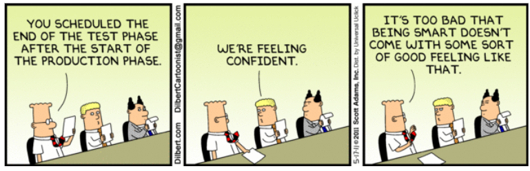
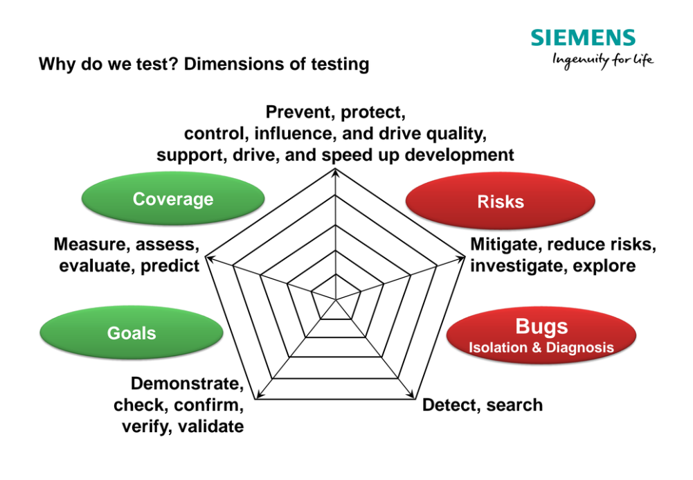
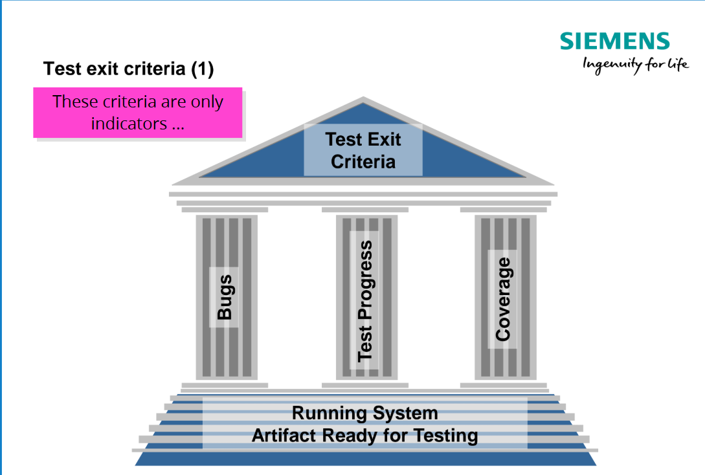
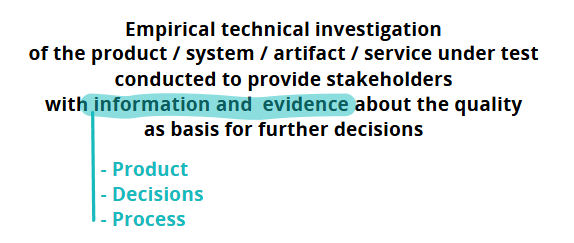
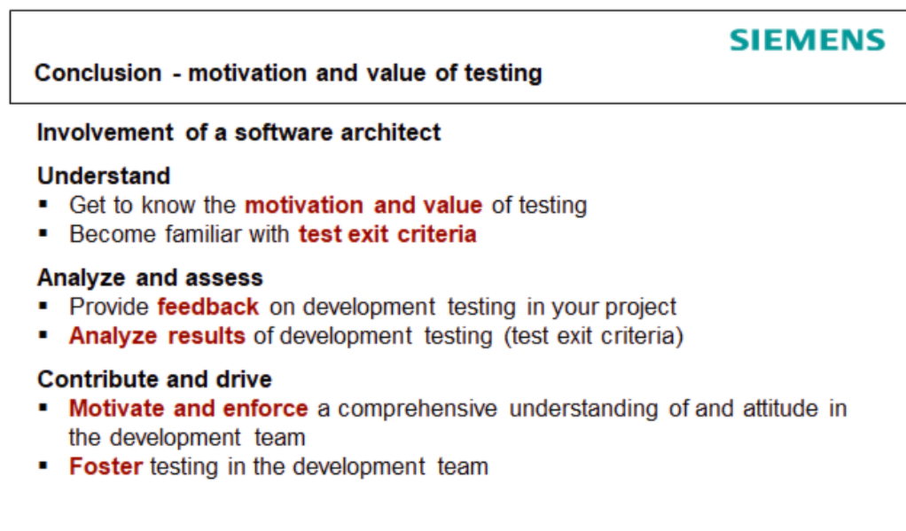
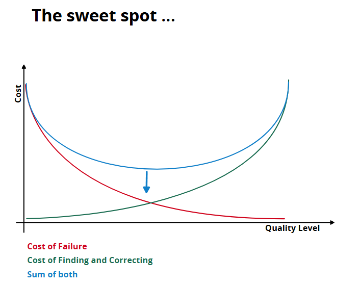
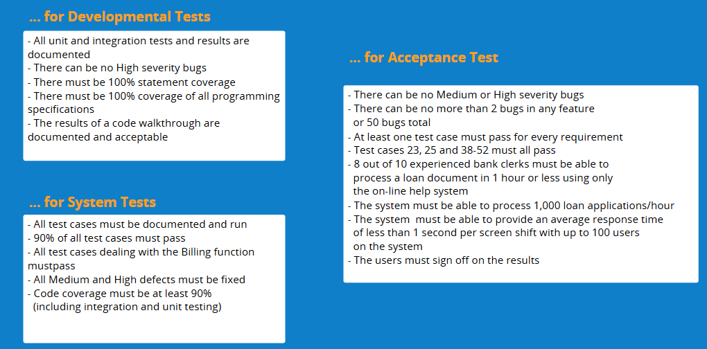
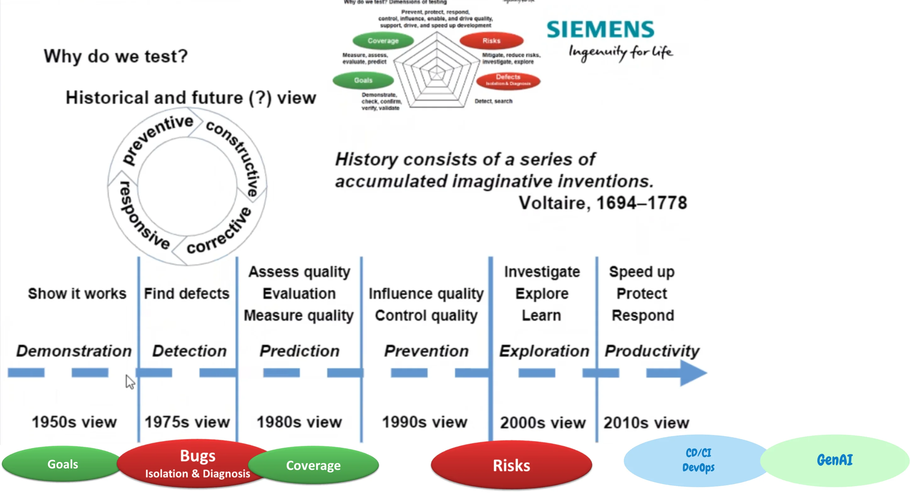

Value of Testing, Test exit criteria

#Value of Testing
The value of testing concerns identifying and quantifying the benefits that the testing process brings to an organization. Testing itself does not increase software quality; it serves only as an indicator of that quality and a tool for obtaining objective information. Real value arises when this information is used to prevent errors, reduce costs (Cost of Quality), and manage risks.

Test Exit Criteria represent a defined set of conditions that determine when a testing phase can safely and officially end. They are a key mechanism for evaluating whether the level of testing and quality achieved corresponds to business goals, and they determine the point at which the cost of searching for further errors exceeds the risk posed by errors not yet discovered.

#Definitions and basic concepts
#Testing
It is an empirical technical investigation of a product, which has the task of providing all involved parties (stakeholders) with objective information and evidence about quality. This information then serves as a basis for further decision-making.

Quality myth:
Testing itself does not increase software quality. Test results are only an indicator of quality (Steve McConnell, 1993).
Golden rule:
"It's not about how much it costs, but how much it saves." (Rex Black).
#Value of Testing
Definition: Quantifiable and qualitative benefits of testing for the business. Quantitative value includes savings in support costs, a reduced risk of errors in production, and cheaper defect repairs (through early detection). Qualitative value includes release confidence, reputation protection, compliance, and reduced legal risks.
Significance in architecture: The architect must understand that investment in testability (Design for Testability) directly increases the value of testing by reducing the cost of automation and accelerating the feedback loop.
Significance in testing: Makes it possible to justify the budget and resources for testing ("what is valued gets funded").
Typical mistake or misunderstanding: Expecting testing to have intrinsic value in itself. Value arises only when it aligns with the organization's business goals.
#Value of testing from stakeholder perspective (Brainstorming)
Different roles perceive the value of testing differently. Below is a critically unified overview of activities and goals according to individual stakeholders:
Software Architect: Interested in architecture verification and integration/API tests.
Goal: Validation of components and their relationships, confirmation that architecture corresponds to specification and that the system functions as a whole.

Developer: Focuses on Unit and Integration tests.
Goal: Maximization of code coverage, early detection of errors and confirmation of implementation correctness (test refinement).
Product Owner (PO) / Requirement Engineer: Defines acceptance criteria and requires system tests.
Goal: Clear quality statement, requirements coverage, understandability of assignment for the team and agreement with Epics/User Stories.
Project/Release Manager (PM/PLM): Monitors test reports, coverage and quality KPIs.
Goal: Assurance that delivery is not threatened, everything is green ("All greens") and every feature has its test and report.
Tester / Test Architect: Creates test plans, scenarios and automated tests.
Goal: Certification of functionality, traceability (tracking/tracing) and ability to run tests repeatedly on demand.
Quality Manager / PSSE (Security): Requires security testing and full coverage.
Goal: Secure product and assurance that every feature is properly tested.
Regulator / Validator: Reviews test design and reports.
Goal: Proof that security requirements, laws and standards are met.
UX Designer: Does usability testing.
Goal: Preparation for user questions and verification of usability.
#Test Exit Criteria
- Definition: A set of general and specific conditions agreed with stakeholders that permit the process to be officially concluded. They prevent a task from being considered done while unfinished parts still exist.
- Significance in architecture: The architect contributes to formulating these criteria (for example, by defining the required code coverage, such as 100% statement coverage, or performance limits).
- Significance in testing: They provide an objective metric for deciding "whether we are done yet". They include metrics such as the number of tests executed, the test pass rate, the number of open critical defects, or the status of regression testing.
- Typical mistake or misunderstanding: Insisting strictly on the absolute fulfilment of all criteria. In practice, exit criteria are often subject to compromise and may be modified (waived) if the business situation requires it and the risk is acceptable.
#Cost of Quality
- Definition: A financial expression of the costs of preventing, detecting, and resolving software defects. It is divided into prevention and detection costs (testing) and the costs of internal or external failures (production errors).
- Significance in architecture and testing: Testing acts as an investment in detection, which is cheaper by orders of magnitude (often 10 to 100 times) than fixing an error at the customer's site.
#Residual Risk
- Definition: The level of risk that remains in the system after measures (testing and fixing known defects) have been applied and the process reaches the Exit Criteria.
- Significance in architecture and testing: Helps managers and architects make the so-called "release decision". Even if the system does not meet the ideal exit criteria, it is necessary to assess whether the residual risk is tolerable.
#Optimum testing
"In software architecture and testing, there is no universal rule for determining how much testing is enough. Instead, we use the economic Cost of Quality Graph and Cost of finding and correcting. When we add these two curves together, we obtain the total cost of quality curve, which forms an imaginary U shape. The lowest point of this valley is our 'sweet spot'. This point represents the moment when the marginal cost of uncovering another error exceeds the estimated damage that the error would cause at the customer's site. From the Test Architect's perspective, this point is critical for defining 'Test Exit Criteria'. It teaches us an architectural trade-off: Testing is never truly finished – it is stopped by agreement between management and the project team, because further debugging would simply make no economic sense and would cost more than it would save. For Safety-Critical systems, this point is naturally shifted much further to the right, but the mechanics of the graph apply universally."

#Common mistakes and anti-patterns
Mistake in the testing strategy: Ignoring the business context
- Why it is a problem: Test managers often focus only on tactical tasks (writing tests, finding errors) and do not communicate their value to the business (such as helpdesk savings or a reduced risk of failure).
- How it manifests: Budget cuts for the QA team. Management does not see the return on investment (ROI).
- How to prevent it: Evaluate testing through ROI and Cost of Quality analysis. Measure, for example, the support time saved or the cost of defects prevented.
Mistake in communication: The Absence of Errors Fallacy and endless testing
- Why it is a problem: Testing can never be fully completed (exhaustive testing is impossible). The goal of testing is not to prove that a system has no errors, but to uncover them and manage risks.
- How it manifests: The team strives for unattainable perfection, and the "cost of finding the next bug" grows, delaying the release (corresponding to the principle: The marginal cost of finding the next bug exceeds the expected loss from that bug).
- How to prevent it: Establish clear and measurable Exit Criteria. Accept that testing is not "finished", but "stopped" (Testing is never finished, it is stopped).
Mistake in requirements: Poorly defined or missing Exit Criteria
- Why it is a problem: The team does not know when it can end the testing phase (such as Integration or System testing).
- How it manifests: Pressure to release before the system is stable, or, conversely, unnecessarily prolonged testing.
- How to prevent it: Define Exit Criteria in the Test Plan (for example, the required code coverage of 100%, no High/Critical defect, and so on) and formally evaluate them during execution and before release. Traffic-light systems (Green, Yellow, Red) can be used to evaluate individual criteria.
#Connection to exam questions
- Basic question: What are Test Exit Criteria and what is their purpose?
- Note: The answer must mention a set of conditions that prevent premature termination of testing and serve planning and reporting purposes.
- Intermediate question: How can the Value of Testing be quantified?
- Note: Present the Cost of Quality model. Testing saves resources by reducing the cost of defect repairs through moving their detection from production to the early stages of development (shift-left).
- Advanced question: Explain the relationship between Cost of Quality and the definition of Test Exit Criteria.
- Note: Exit Criteria represent the break-even point at which the costs of further detection and repair exceed the estimated cost of failure in production.
- Practical experience question: What specific metrics would you include in Exit Criteria for system tests?
- Note: Name requirements coverage (100% test coverage), the number of unresolved defects by severity (no High/Critical), environment stability (no crashes for N weeks), or the test case pass rate.
- Trade-off decision question: The release is scheduled for tomorrow, but one of the Exit Criteria (such as 100% of failover tests executed) has been evaluated as "Yellow/Red". How would you resolve this as a Test Architect?
- Note: State that Exit Criteria can be revised (waived). The decision is always a business trade-off between schedule, quality, and risk. It is necessary to assess Residual Risk and agree with project management on accepting the risk or postponing the release.
#Model exam answer
Topic: Value of Testing and Test Exit Criteria
"The value of testing does not lie merely in running tests, because testing without a business goal has no intrinsic value. Real Value of Testing arises when we provide stakeholders with information for decision-making, reduce residual risks, and move defect identification to the earliest possible stages of development. This demonstrably reduces the 'Cost of Quality', because finding a critical error in production is more expensive by orders of magnitude than finding it during the testing phase.
To avoid the so-called trap of endless testing – because exhaustively testing every possibility is technically impossible – we must define Test Exit Criteria for each level. These are a set of exact conditions, such as 'Code coverage has reached 90%', 'No open critical defect', or 'All failover scenarios have been completed successfully'.

From an architectural perspective, these criteria are crucial for defining the 'Definition of Done'. From a testing perspective, they are a tool for reporting progress.
In practice, we often encounter a trade-off when not all exit criteria are green just before release. For example, the system works, but it has not been possible to simulate extreme hardware load. At that point, as a test architect or manager, I prepare a status assessment (for example, in the form of a Red/Yellow/Green report) and initiate a discussion with stakeholders. If meeting the delivery deadline outweighs the acceptable Residual Risk, the given exit criterion can be waived by agreement. In summary, testing is never really finished – it is stopped at the moment when the cost of finding another error exceeds the potential damage it would cause."
#11. Short version for quick revision
5 main points:
- Testing has no intrinsic value; it serves business goals and reduces the Cost of Quality.
- The purpose of testing is not to prove that the system is error-free, but to uncover risks and obtain data.
- Exit Criteria prevent both endless testing and premature termination of phases.
- Exit Criteria define conditions such as "100% code coverage" or "0 critical bugs".
- Expected trade-off: Exit Criteria can be relaxed (waived) based on the acceptance of residual risk.
5 key terms: Here is a brief explanation of the key terms, each in one sentence:
Value of Testing: The value of testing lies in uncovering defects, minimizing risks, and providing stakeholders with objective information about software quality.
Test Exit Criteria: A set of predefined conditions (such as code coverage or the number of critical defects) that must be met for a testing phase to be officially concluded.
Cost of Quality: This term represents the total financial costs incurred in ensuring quality, that is, in preventing, detecting, and subsequently fixing errors throughout development.
Residual Risk: Residual risk is the level of failure risk that intentionally or unintentionally remains in a software product even after all testing and mitigation measures have been successfully completed.
Absence of Errors Fallacy: This fallacy points out that even if a system is developed entirely without technical errors, it is considered a failure if it does not meet business needs or users' actual requirements.
Value of Testing, Test Exit Criteria, Cost of Quality, Residual Risk, Absence of Errors Fallacy.
3 most common mistakes:
- Ignoring the business context of testing.
- Unachievable demands for perfection (a zero-bug release at any cost).
- Absence of a definition of Exit Criteria at the beginning of the project.
- 1 concise model sentence: "Testing ends (reaches Exit Criteria) at the moment when the marginal cost of uncovering another error exceeds the expected losses caused by that error in production."
#Learning outcome
The knowledge gained from this topic (based on standards for Test Architects and Managers) reflects an understanding of how to establish a testing strategy with regard to limited resources and risks (Risk-Based Testing). The student can define, apply, and monitor Test Exit Criteria and understands both the financial and qualitative value that testing brings to the business. The student understands how to communicate software metrics and quality to business management (quantifying the Cost of Quality and evaluating Trade-offs at release).
#Summary in one table
| Area | What matters | Relationship to architecture | Relationship to testing | Typical exam question |
|---|---|---|---|---|
| Value of Testing | Testing provides information and reduces the future cost of defect repairs (Cost of Quality). | Architecture must design testable code (Design for Testability), reducing the cost of creating tests and increasing ROI. | Testing demonstrates its value when it prevents errors from reaching the customer or confirms the quality of the delivery. | How do you use the Cost of Quality model to quantify the return on investment in testing (ROI)? |
| Test Exit Criteria | A set of measurable conditions determining the end of a testing phase. Prevents endless debugging and premature release. | The architect influences criteria such as Code Coverage, Performance metrics, or tolerated integration defects. | Serves as an objective "Definition of Done" for the QA team (for example, 100% of use cases tested, 0 blocking defects). | What should exit criteria for System Test contain, and how should you respond if they are not met before release? |
| Residual Risk (Trade-off) | Completely error-free software does not exist. Accepted risk always remains when releasing to production. | The decision to release an architecture or module with unresolved minor issues depends on the Cost of Failure. | If Exit Criteria are not met, the tester provides data (red/yellow status), and management decides on an exception (waiver). | Your load tests are incomplete, but the project deadline is tomorrow. What course of action would you choose? |
